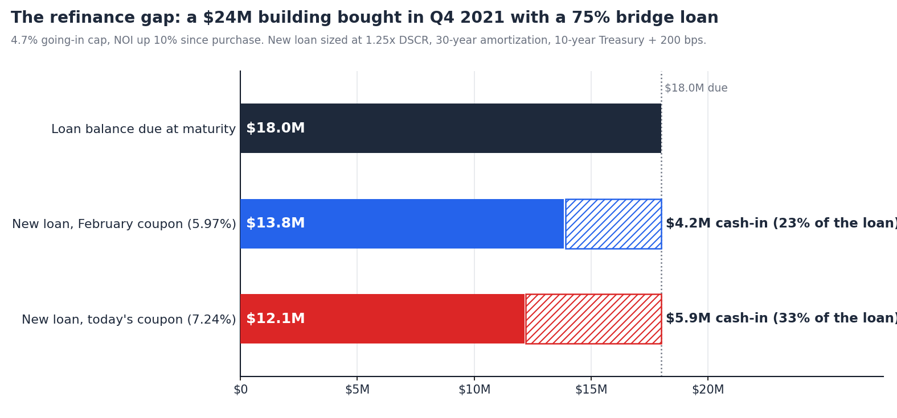
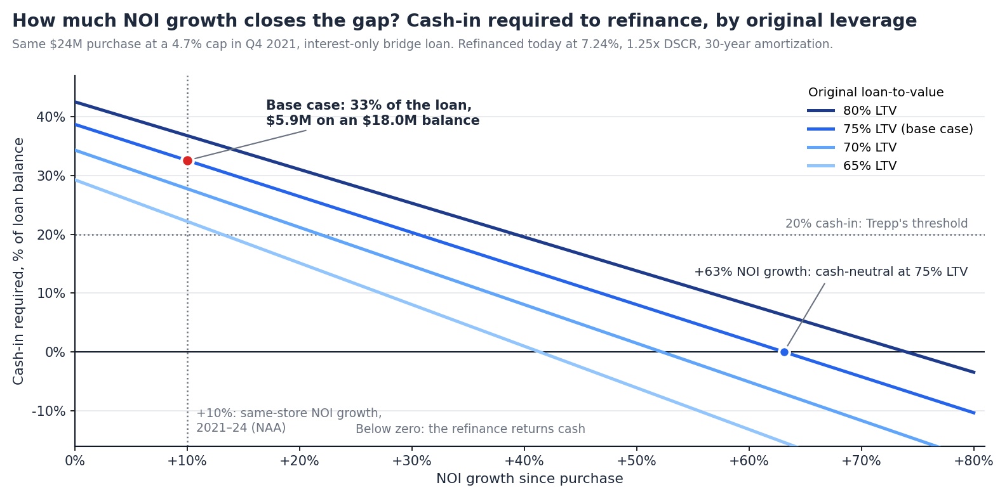

What a 2021 Bridge Loan Needs to Clear at a 7% Coupon
Summary. About $297B of multifamily mortgages are scheduled to mature in 2026 and another $223B in 2027, according to the Mortgage Bankers Association. Very little of it is agency paper: only 4% of Fannie Mae, Freddie Mac and FHA balances come due this year, against 25% of CMBS and CLO balances and 29% of loans held by credit companies and other lenders. The maturities are concentrated in the short-term, floating-rate loans written in 2021 and 2022.
Last week's note on negative leverage looked at what a 5% ten-year does to a buyer. This one looks at the owner on the other side, whose loan is due. The 10-year closed at 5.24% on October 1. We take a building bought at the Q4 2021 average cap rate with a typical bridge loan and size its replacement loan today. Findings:

The volume. The Mortgage Bankers Association's annual survey, published in February, put 17% of all commercial and multifamily mortgage balances, $875B of $5.0T, as maturing in 2026. For multifamily the share is 13%, about $297B of $2.3T outstanding, with $223B following in 2027 and roughly $237B in each of 2028 and 2029.
The lender mix. The same survey splits maturities by capital source, and the split is the story. Just $39B, 4% of the balance held or guaranteed by Fannie Mae, Freddie Mac, FHA and Ginnie Mae, matures this year. For CMBS, CLO and other ABS loans it is $200B, or 25%. For credit companies, warehouse lines and other lenders it is $163B, or 29%. Long-term fixed-rate agency debt is not what is coming due. Bridge debt is.
Where the stress shows up first. CRED iQ's distress rate for CRE CLOs rose from 19% in July to 28% in August, the sharpest one-month move of any deal type this year. The largest single contributor is a 2021 multifamily CLO with $353M in special servicing across seven loans, including two August defaults tied to 2026 balloon maturities. Trepp's multifamily CMBS delinquency rate rose 46 bps in July to 7.69%.
The published benchmark. In July, Trepp sized replacement loans for 799 private-label CMBS loans, $15.1B in total, that mature in the second half of 2026 with no extension options left. It found 54% of the balance would need new borrower equity, and $5.6B would need a contribution of 20% or more. For multifamily the figures were 52% and 41%. The split by loan structure was wider than the split by property type: 80% of the interest-only balance needed cash, against 23% of the amortizing balance. Trepp also reports that 36% of 2026 CMBS hard maturities carry a debt yield of 8% or less.
Apartment transaction cap rates averaged 4.7% in Q4 2021, the lowest reading since Real Capital Analytics began the series in 2001 (NMHC). The 10-year averaged about 1.5% that quarter. Bridge lenders were quoting up to 75% of as-is value and 80% of cost, interest-only, on three-year terms with two one-year extensions. Floating coupons penciled around 3.5%, and a rate cap that cost about $30K in 2021 cost $1M or more to renew two years later (CRE Analyst).
A three-year loan closed in late 2021 with both extensions used reaches final maturity in late 2026. That is the loan we model:
| At purchase, Q4 2021 | Today | |
|---|---|---|
| Value | $24.0M at a 4.7% cap | $21.6M at a 5.75% cap |
| NOI | $1.13M | $1.24M (+10%) |
| Loan balance | $18.0M, interest-only | $18.0M |
| Loan-to-value | 75% | 83% |
| Floating coupon | ~3.5% | ~6.9–7.4% (SOFR 3.88% + 300–350 bps) |
| Interest coverage | 1.79x | 1.00x–0.93x |
| Debt yield | 6.3% | 6.9% |
On the NOI assumption. The National Apartment Association's same-store survey shows income per unit up 14.1% between 2021 and 2024 and NOI up just 10%, because expenses ran ahead of rents: repairs and maintenance up 28%, insurance up 55% from $502 to $777 a unit. We use 10% as the base case and test the range in Section 4. A value-add plan that worked will have done better. One that stalled when the floating coupon doubled will have done worse.
What the table says. The building is worth 10% less than it cost, on higher NOI, because the cap rate moved 105 bps. The loan is unchanged. Unhedged, the property's income now roughly equals its interest bill. This is the position Trepp describes: owners who can still cover their interest payments but cannot refinance at maturity without significant new equity.
We size the takeout the way an agency lender does and the way we did last week: 10-year Treasury plus 200 bps, 30-year amortization, 1.25x minimum DSCR, 75% maximum LTV. The 10-year closed at 5.24% on October 1 (FRED DGS10), so the coupon is 7.24%.
The DSCR test binds, not the LTV test. At 75% of today's value the loan would be $16.2M. At 1.25x coverage on $1.24M of NOI it is $12.1M, which is 56% of value. That is the same result as last week's note from the other direction: at these coupons agency sizing stops in the high 50s.
The gap is $5.9M. $18.0M is due and $12.1M is available. The difference is 33% of the loan balance. The sponsor's original equity was $6.0M, so refinancing means writing the equity check a second time. On Trepp's scale this loan sits well inside the group needing 20% or more.
Most of the gap predates this year. The rest is the rate move. At February's 5.97% coupon the same loan sized to $13.8M and the gap was $4.2M. The 127 bp rise in the index since then added $1.7M. Each 25 bps moves the gap by about $0.3M. At a 150 bp spread instead of 200, the gap is $5.2M.

NOI growth. The loan refinances without new cash when NOI reaches $1.84M, 63% above the 2021 level. The table gives the cash-in as a share of the loan balance across the range:
| NOI growth since purchase | 65% LTV | 70% LTV | 75% LTV | 80% LTV |
|---|---|---|---|---|
| 0% | 29% | 34% | 39% | 43% |
| +10% (base case) | 22% | 28% | 33% | 37% |
| +20% | 15% | 21% | 26% | 31% |
| +30% | 8% | 15% | 20% | 25% |
| +40% | 1% | 8% | 14% | 20% |
| +50% | cash out | 2% | 8% | 14% |
A sponsor who bought at 65% leverage and grew NOI 40% is whole. A sponsor at 80% who executed the same plan still needs 20% of the loan. Leverage at purchase matters more than execution since.
The purchase cap rate. 4.7% was the national average. Sun Belt value-add traded tighter. At a 4.2% going-in cap the base-case gap is $7.2M, 40% of the loan. At 5.2% it is $4.6M, 25%.
The coupon. Holding NOI at +10%, the new loan covers the old one at a coupon of about 3.7%. The loan refinances cleanly only at roughly the rate it was written at.
Pay down and refinance. $5.9M of new equity, into a deal where the first $6.0M is currently worth $3.6M on paper. For a syndication this is a capital call to LPs who have received little or nothing, or a rescue tranche that sits ahead of them.
Extend. Of the $957B the Mortgage Bankers Association counted as maturing in 2025, a large share was extended instead of repaid. Lenders are now reported to be extending by months, not years, and typically ask for a paydown, a new rate cap and a reserve. An extension buys time at a floating coupon that the income barely covers.
Fill the gap with preferred equity. After debt service on the new $12.1M loan, the property has about $250K a year left. At an assumed 13% return, $5.9M of preferred equity costs $760K a year. It cannot be paid currently, so it accrues ahead of the common. Gap capital solves the maturity and transfers most of the remaining equity value to whoever provides it.
Sell. At a 5.75% cap the building sells for $21.6M and nets $21.1M after 2% costs. The loan takes $18.0M. The sponsor recovers $3.1M of $6.0M, before any capex spent since purchase. That is a 48% loss of equity, and it is the best of the four outcomes for anyone who cannot write the check.
Three things follow for a sponsor looking at these assets from the outside.
The gap can be sized before the first call. Purchase date, purchase price and lender are public record. Those three facts, a rent roll estimate and today's index are enough to run the arithmetic in Section 3 and know whether the owner has a choice.
The seller's floor is the loan balance, not the cap rate. On this deal the owner clears the loan at $18.4M, a 6.75% cap. Everything between $18.4M and $21.6M is equity the seller is trying to keep. A buyer who has sized the gap knows where in that range the conversation starts, and that the lender may be the real counterparty. The standoff described in last week's note, with sellers anchored at 5.75%, holds only for owners without a maturity.
Price is what restores the buyer's cash yield. The same DSCR test caps the buyer's loan at $12.1M. At $21.6M that means $9.4M of equity and a 2.6% year-one cash-on-cash. At $18.4M it means $6.2M of equity and 4.0%. Negative leverage does not go away at the lower price, but the deal pays a distribution.
The model is deliberately simple: no future funding, no partial paydowns, no cap proceeds, sizing on in-place NOI. Each of those moves a specific deal's number. None of them changes the order of magnitude, which is that a 2021 bridge loan at average pricing and average performance is short by about a third.
Teez sizes the takeout loan from the DSCR constraint and re-runs it as the index moves, so the refinance gap on a target, and the price at which the seller clears it, is on the page before the first call. More at teez.ai.